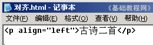
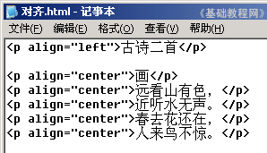
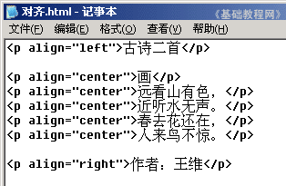

HTML 基础入门教程
三、文字对齐 返回
这一课我们来学习文字对齐，对齐一般有左对齐、右对齐、局中对齐等，下面我们来看一个练习；
1、启动记事本
1）点击“开始－所有程序－附件－记事本”；
2）记事本的窗口主要包括标题栏、菜单栏、工作区，左上角有一个一闪一闪的光标插入点竖线；

3）点菜单“文件－保存”命令，以“对齐.html”为文件名，类型为“所有文件”，保存文件到自己的文件夹，注意文件名后缀为英文字母；
2、输入内容
1）在工作区中输入下列内容；

这儿的align是对齐标签，left是左；
2）按两下回车，继续输入下列内容；

这儿center是居中对齐，按Ctrl＋S保存一下文件；
3）再按两下回车，继续输入下列内容；

这儿right是右对齐，按Ctrl＋S保存一下文件，
在自己的文件夹中找到“对齐”，打开后的效果应该是：
古诗二首 画 远看山有色， 近听水无声。 春去花还在， 人来鸟不惊。 作者：王维 |
本节学习了文字对齐的基础知识，如果你成功地完成了练习，请继续学习下一课内容；
本教程由86团学校TeliuTe制作|著作权所有
基础教程网：http://teliute.org/
美丽的校园……
转载和引用本站内容，请保留版权信息和本站链接。